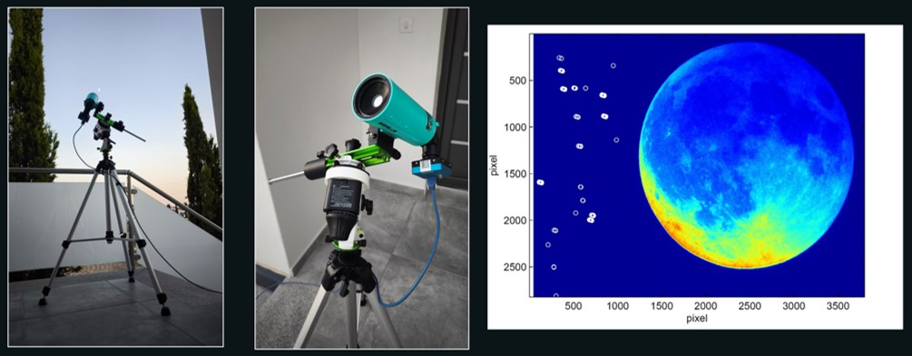

Description
The lunar observation rig is our most specialised optical setup. It combines a Maksutov 60 telescope — a compact catadioptric design well-suited to high- resolution observation of bright objects such as the Moon — with a dedicated monochrome astronomical camera.
The mount is the most important component of the setup. A Star Adventurer 2i equatorial mount tracks the sky to compensate for Earth's rotation, allowing long exposures and consistent framing of a target region without drift. A heavy-duty tripod provides a stable base.
The camera is a Sony Exmor CMOS monochrome sensor (8.3 MP, USB 3.0, model SCM585-NIR-TR) operating in both optical and infrared spectra. Monochrome sensors are used in scientific observation because they do not interpolate colour data — each pixel records raw luminance, which improves sensitivity and preserves detail. The NIR capability extends the observable spectrum beyond visible light.
The system is controlled by a laptop running SharpCap, a widely used application for astronomical imaging that provides live stacking, high-speed video capture, and full control over exposure, gain and frame rate.
Equipment

Purpose
The lunar observation rig is designed for high-resolution imaging of the Moon as a calibration target and for detecting small, fast-moving objects in the near-lunar field of view. Its monochrome sensor and equatorial tracking make it particularly suited to detecting objects that would be lost in the noise of a colour sensor or blurred by an untracked mount.
This rig is described in full in the UAP Cyprus methodology presentation.